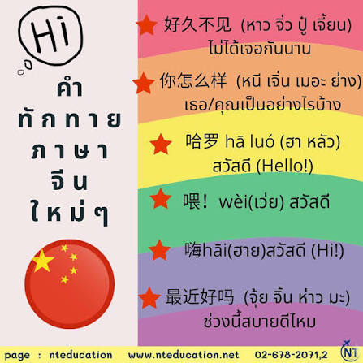

คำทักทายภาษาจีนมีอะไรบ้าง

คำทักทายภาษาจีนมีหลากหลายรูปแบบตามสถานการณ์ ระดับความสนิท และช่วงเวลา โดยมีคำที่นิยมใช้ดังนี้ 你好 nǐ hǎo หนีห่าว สวัสดี ทักทายทั่วไป您好 nín hǎo หนินห่าว สวัสดี ใช้กับผู้ใหญ่หรือลูกค้าเพื่อความสุภาพ大家好 dàjiā hǎo ต้าเจียห่าว สวัสดีทุกคน ใช้ทักทายคนกลุ่มใหญ่早 zǎo เจ่า มอนิ่ง ทักทายคนสนิทตอนเช้าแบบสั้น早上好 zǎoshang hǎo เจ่าซังห่าว สวัสดีตอนเช้า แบบเป็นทางการ下午好 xiàwǔ hǎo เซี่ยอู่ห่าว สวัสดีตอนบ่าย晚上好 wǎnshang hǎo หวั่นซังห่าว สวัสดีตอนเย็น喂 wéi เหวย ฮัลโหล ใช้รับสายโทรศัพท์你好吗 nǐ hǎo ma หนีห่าวมา สบายดีไหม ถามสารทุกข์สุกดิบ最近怎么样 zuìjìn zěnmeyàng จุ้ยจิ้น เจิ่นเมอยั่ง ช่วงนี้เป็นยังไงบ้าง吃了吗 chī le ma ชือ เลอ มะ กินข้าวหรือยัง ทักทายแสดงความใส่ใจในชีวิตจริง好久不见 hǎojiǔ bú jiàn ห่าวจิ่ว บู๋ เจี้ยน ไม่ได้เจอกันนานเลยนะ嗨 hāi ไฮ หวัดดี ทักทายแบบวัยรุ่นเป็นกันเอง哈喽 hā lóu ฮาโหลว ฮัลโหล ทักทายแบบวัยรุ่นเป็นกันเอง